모바일 스토어에서 급상승한 뱀서라이크 후더덕 서바이벌을 3일간 직접 플레이하고, 사용자를 사로잡는 시스템 하나를 골라 분석함.
이진혁 · 포트폴리오 · 플레이 기간 3일 · 플랫폼 Google Play
핵심 요약
분석 대상 초보 7일 이벤트: 매일 0시에 일차별 미션이 열리고, 달성하면 재화를 받는 신규 유저용 이벤트
사로잡는 이유 확정 레전드 보상이 걸린 누적 게이지, 만회는 되지만 미룰 수 없는 마감, 본편 행동을 목표로 바꾸는 미션
아쉬운 점 초반 보상량이 적고, 흩어진 소액 보상의 알림 점과 광고·결제 유도가 접속 직후부터 피로감을 줌
01
분석 대상
후더덕 서바이벌의 초보 7일 이벤트를 분석함. 3일 동안 매일 접속한 이유가 전투가 아니라 이 이벤트의 보상이었기 때문임.
게임과 시스템
분석할 시스템은 초보 7일 이벤트임. 매일 0시에 1~7일차 일일 미션이 하루에 하나씩 열리고, 달성하면 인게임 재화를 보상으로 받아 캐릭터를 성장시킬 수 있는 신규 유저용 이벤트임.
게임은 후더덕 서바이벌로, Google Play에서 롤플레잉으로 분류된 뱀서라이크 장르이며 캡처 시점에 인기 앱/게임 차트 2위(평점 4.9)였음.
과금은 광고 시청과 결제 상품으로 구성됨. 광고를 보면 보상을 받는 빠른 순찰과 관람 비밀 보물이 있고, 결제 상품으로는 광고 제거 월간카드(7,500원), 특급 월간카드(13,000원), 특급 종신카드, 소액 패키지인 출항 도움(3,000원) 등이 있음.
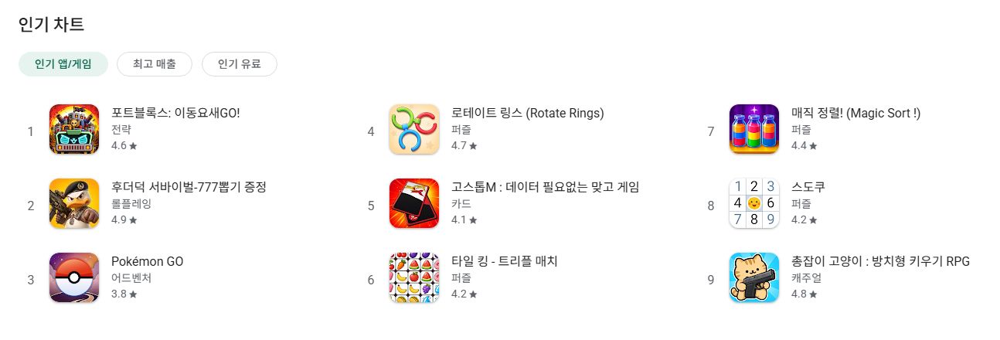
Google Play 인기 차트(인기 앱/게임): 후더덕 서바이벌 2위, 분류 롤플레잉, 평점 4.9
선정 이유
매일 접속한 이유가 전투가 아니라 이 이벤트의 보상이어서 선정함. 3일간 플레이하며 매일 앱을 다시 켜게 만든 가장 큰 요인이 초보 7일 이벤트였다. 일일 미션으로 누적 메달을 모으면 레전드 영웅을 확정으로 받을 수 있고 이벤트는 기간이 끝나면 종료되기 때문에, 미리 스테이지를 진행해 두어 어떤 미션이 열려도 클리어할 수 있게 해야겠다는 목표의식이 생겼다.
02
시스템 구조
매일 0시에 새 일차가 열리고, 본편 플레이로 미션을 달성해 재화와 메달을 받아 성장하는 7일짜리 반복 구조임.
핵심 루프
1. 0시새 일차의 미션이 열림
→
2. 미션 확인장비 강화, 몬스터 처치, 재화 획득, 챕터 클리어 등
→
3. 본편 플레이스테이지를 진행해 미션 달성
→
4. 보상 수령인게임 재화와 메달 획득, 상단 게이지 상승
→
5. 성장재화로 장비 강화, 더 높은 요구량 대응
다음 날 0시에 다음 일차가 열리며 반복되고, 누적 메달이 1,080에 이르면 레전드 영웅을 확정으로 받음.
구성 요소
핵심은 세 가지임. 매일 0시에 새 일차가 열리고, 놓친 일차도 나중에 달성할 수 있으며, 미션으로 모은 메달이 1,080에 도달하면 레전드 영웅을 확정으로 받음.
리셋 시간 매일 0시 (이벤트 창의 남은 시간과 현재 시각을 대조해 확인)
주기 24시간마다 다음 일차가 열림 (1일차~7일차). 열리기 전까지 잠겨 있고 미리 볼 수 없음
최종 보상 누적 메달 1,080을 채우면 레전드 영웅을 확정으로 획득 (어떤 영웅인지는 랜덤)
누적 게이지 미션을 달성해 받은 메달의 합계가 상단 게이지에 쌓이고, 90 단위로 구간 보상이 있음 (캡처 시점 350)
놓친 일차 나중에 달성해서 보상을 받을 수 있음
기간 이벤트 종료까지 남은 시간이 상단에 표시됨 (캡처 시점 4일 8시간 38분)
미션 종류 장비 장착과 강화, 몬스터 처치, 머니와 다이아 획득, 챕터 클리어, 친구에게 선물하기, 모험 레벨 등
요구량 변화 1일차 → 2일차: 몬스터 처치 2,000 → 10,000마리, 머니 획득 3,000 → 40,000, 다이아 획득 800 → 1,500, 장착 장비 강화 레벨 12 → 15
미션 구성 일차마다 5개 이상, 미션마다 보상 2종 (메달 포함)
진입 경로 로비 오른쪽 아이콘 열의 "초보7일 이벤트"
함께 있는 요소 같은 창의 "초특가팩" 탭
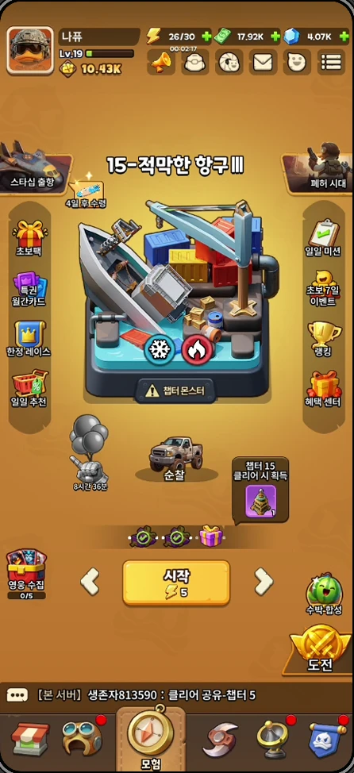
로비 화면: 오른쪽 아이콘 열에 초보7일 이벤트가 있고, 하단 메뉴 여러 곳에 빨간 알림 점이 표시됨
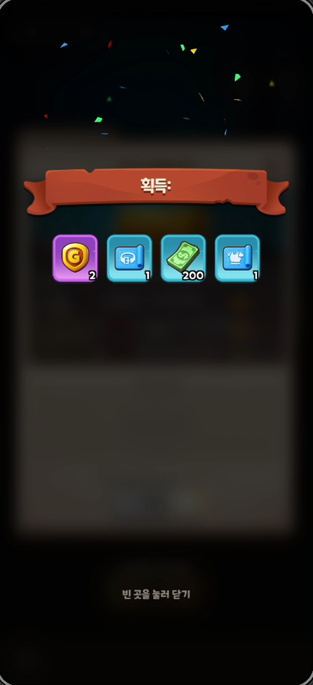
보상 획득 팝업 예시: 1~3일차 보상은 이미 수령해서 다른 보상 창으로 대신 캡처함
03
사로잡는 이유
계속 하게 만드는 이유는 세 가지임. 첫째, 확정 보상이 걸린 누적 게이지. 둘째, 만회는 되지만 미룰 수 없는 마감. 셋째, 평소 플레이를 목표로 바꾸는 미션. 반면 가려진 다음 일차는 접속 이유가 되지 못했음.
재미요소 1. 확정 보상이 걸린 누적 게이지
미션을 끝낼 때마다 확정 보상이 눈에 보이게 가까워져서, 계속 달성할 이유가 생김.
설계
미션을 달성하면 메달이 쌓여 상단 게이지가 차오르고, 90 단위로 구간 보상이 있으며, 1,080에 도달하면 레전드 영웅을 확정으로 획득함. 어떤 영웅인지는 랜덤임.
효과
현재 위치(캡처 시점 350 / 1,080)와 다음 보상이 항상 보여서 목표에 가까워질수록 더 하고 싶어지는 목표 근접 효과가 생김. 확정 보상이라 들인 시간이 헛되지 않으리라는 확신도 줌.
근거
레전드 보상이 걸려 있어서 일일 미션을 놓치지 않으려는 목표의식이 생겼고, 3일차에는 가능한 모든 일일 퀘스트를 클리어했다.
재미요소 2. 느슨한 일일 압박과 단단한 최종 마감
놓친 날은 만회할 수 있지만 마감은 미룰 수 없어서, 완주하려는 동기가 생김.
설계
놓친 일차의 미션도 나중에 달성해 보상을 받을 수 있지만, 이벤트 기간은 정해져 있어 끝나면 사라짐.
효과
하루를 빠뜨려도 포기할 이유가 없어 이탈을 막는 안전장치가 되고, 동시에 마감 전에는 반드시 끝내야 한다는 압박이 이어짐.
근거
레전드 보상과 기한이 걸려 있어서, 미리 스테이지를 진행해 두어야겠다는 목표의식이 생겼다.
재미요소 3. 평소 플레이를 목표로 바꾸는 미션
미션이 본편의 핵심 행동으로 이뤄져 있어서, 평소 플레이가 곧 이벤트 진행이 됨.
설계
미션이 챕터 클리어, 몬스터 처치, 장비 장착과 강화, 재화 획득 같은 본편의 핵심 행동으로 구성되고, 요구량은 일차마다 커짐. 몬스터 처치는 2,000마리에서 10,000마리로, 머니 획득은 3,000에서 40,000으로 늘어남.
효과
이벤트가 별도 콘텐츠가 아니라 평소 플레이에 목표를 붙여 줌. 받은 재화는 장비 강화로 이어져 다음 미션을 달성하기 쉽게 만듦.
근거
머니를 써서 엘리트 갑옷을 +42에서 +43으로 강화하면 공격력이 84에서 86, 최대 HP가 420에서 430으로 오름. 3일차 미션에 챕터 10 클리어가 있었고, 3일 동안 챕터 15까지 진행했다.
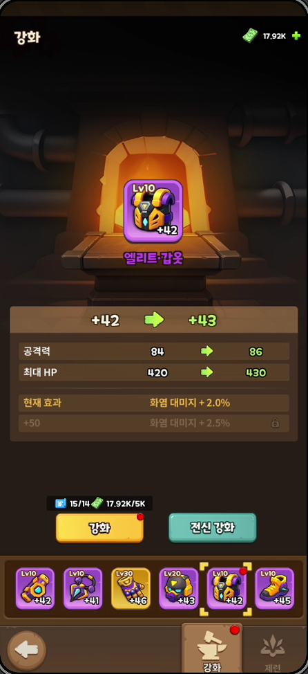
장비 강화 화면: 재화(머니)가 성장으로 이어지는 지점
참고. 접속 이유가 되지 못한 설계
가려진 다음 일차는 재접속의 동기가 되지 못함.
다음 일차의 미션과 보상은 열리기 전까지 볼 수 없고 4~7일차 탭은 잠겨 있음. 하지만 궁금해도 볼 수 없으니 앱을 켤 필요가 없었다. 재접속을 이끈 것은 궁금증이 아니라 누적 게이지와 마감이었음.
04
경험 분석
챕터 진행은 1일차 4 부근, 2일차 11, 3일차 15까지 올랐고, 2일차와 3일차 모두 막히는 구간을 만났다.
DAY 1
정신없는 첫날
여러 신규 보상을 받느라 정신이 없었고, 메인 챕터는 4 정도까지밖에 밀지 못했다.
강화 레벨 12 장비 장착
몬스터 총 2,000마리 처치
3,000 머니 획득
800 다이아 획득
슈페리어 등급 이상 장비 장착
DAY 2
챕터 11에서 막힘
2일차 보상을 받고 어느 정도 적응해서 메인 챕터를 쭉 밀었지만 챕터 11에서 막혔다. 인게임 채팅에서도 다른 유저가 챕터 11에서 막혔다고 말하는 것을 봤고, 이 지점이 첫 번째 임계점인 것 같다.
강화 레벨 15 장비 장착
몬스터 총 10,000마리 처치
40,000 머니 획득
1,500 다이아 획득
전신 장비 슈페리어 등급 달성
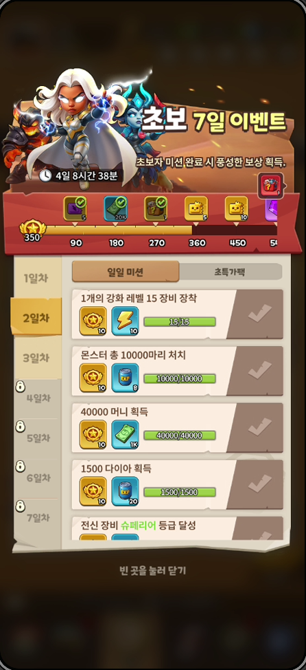
DAY 3
챕터 15에서 다시 막힘
적응해서 가능한 모든 일일 퀘스트를 클리어하고 메인 챕터를 최대한 밀어 챕터 15까지 도달했지만, 또 막혔다.
전신 장비 탁월 등급 달성
친구에게 누적 30회 선물하기
엘리트 등급 이상 장비 2개 장착
챕터 10 클리어
모험 13레벨
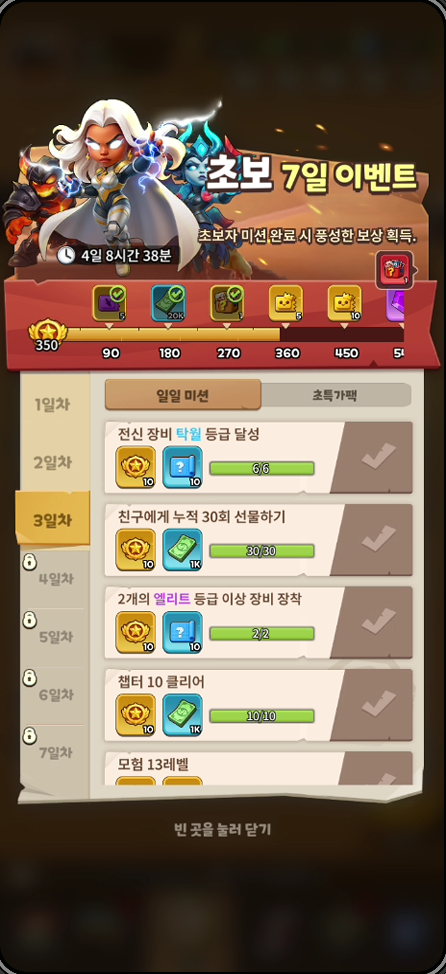
플레이 시간
가장 길게 플레이한 날은 10월 2일(2일차)로 3시간 19분이었다. 이날 메인 챕터를 4 부근에서 11까지 밀었다. 후더덕 서바이벌 앱 사용 시간 통계(9월 27일~10월 3일) 기준 이번 주 합계는 6시간 50분임.
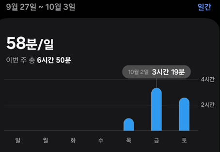
후더덕 서바이벌 앱 사용 시간 통계
05
장단점 분석
장점은 부담 없는 만회와 분명한 최종 보상이고, 단점은 초반 보상량, 광고와 결제 유도, 사라지지 않는 알림 점이 만드는 피로감임.
장점
부담 없는 만회. 놓친 일차도 나중에 달성해 보상을 받을 수 있어, 하루 접속하지 못해도 부담이 크지 않음.
분명한 최종 보상. 누적 메달 1,080을 채우면 레전드 영웅을 확정으로 받아 목표가 뚜렷함.
단점
초반 보상량이 적게 느껴짐. 1~3일차에 받는 재화의 양이 적었음. 미션 보상 머니는 1K인데, 화면의 장비 강화 1회에는 5K가 필요함.
접속 직후부터 쌓이는 피로감. 소액 보상을 받는 곳이 여러 화면에 흩어져 있고, 받을 때까지 빨간 알림 점이 사라지지 않아 게임을 켜자마자 확인할 곳이 생김.
광고 제거 압박. 광고를 요구하는 이벤트가 많아 번거로웠고(관람 비밀 보물은 하루 5회 시청), 광고 제거가 여러 화면에 들어 있어 월간카드(7,500원)를 살까 하는 압박을 느꼈다.
단점의 근거 화면
광고 시청과 월간카드 구매를 권하는 장면이 여러 화면에 들어 있음.
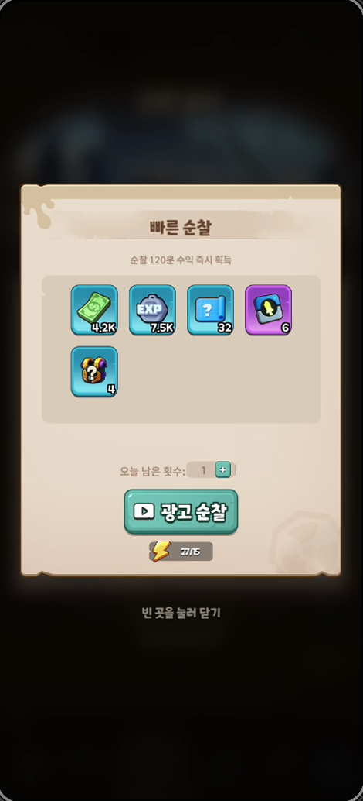
빠른 순찰: 광고를 보고 120분 수익을 받음 (오늘 남은 횟수 1)
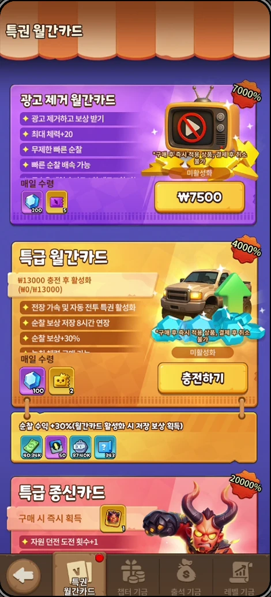
특권 월간카드: 광고 제거 월간카드 7,500원, 특급 월간카드 13,000원. 광고 제거 혜택에 무제한 빠른 순찰이 포함됨관람 비밀 보물: 하루 5회 광고 시청형 이벤트, 누적 횟수에 따라 3·7·12·18회 구간 보상
소액 보상을 받는 곳이 흩어져 있고, 받을 때까지 알림 점이 남음.
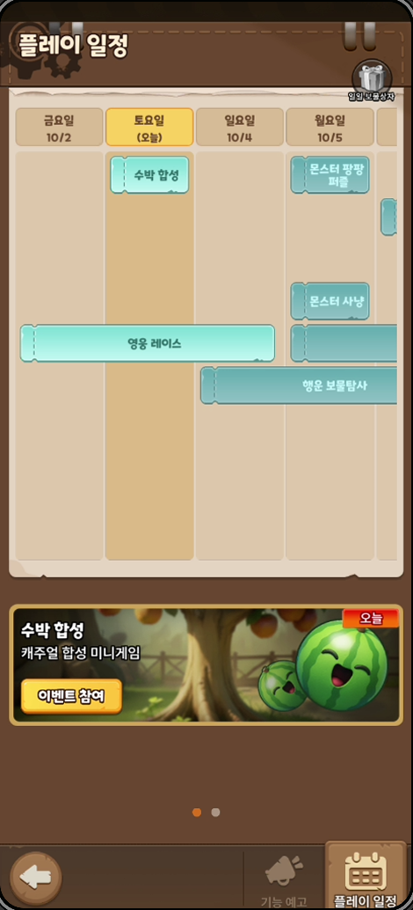
플레이 일정: 우측 상단에 일일 보물상자 아이콘이 있음
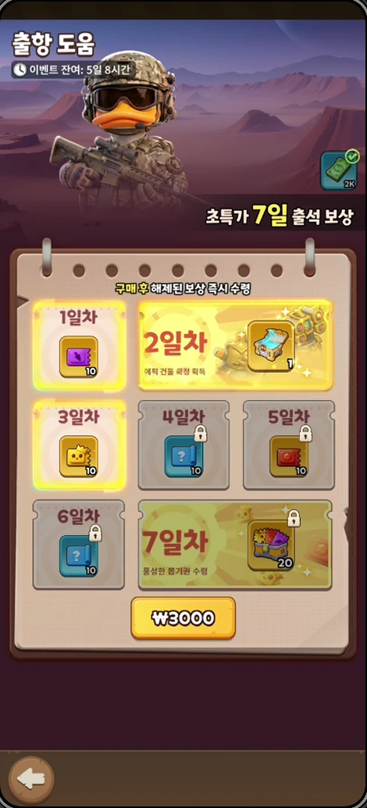
출항 도움: 3,000원 7일 출석 보상 화면, 우측 상단에서 머니를 받을 수 있음
06
단점에 대한 개선점
흩어진 소액 보상은 클릭해서 들어가 받게 하지 말고, 접속 시 팝업으로 한 번에 보여 주되 "오늘 하루 보지 않기"를 함께 두는 편이 나음.
단점
개선안
기대 효과
소액 보상이 여러 화면에 흩어져 있고, 받을 때까지 알림 점이 사라지지 않아 접속 직후부터 피로감을 줌
보상 화면에 일일이 들어가 받게 하는 대신, 접속 시 팝업으로 한 번에 띄워 수령하게 하고 "오늘 하루 보지 않기"를 함께 제공함
확인해야 할 알림 점이 줄어 접속 초반의 피로감이 줄고, 과금 상품을 보여 주려는 회사의 목적은 팝업으로도 유지됨. 팝업이 반복 노출되어 생기는 피로는 "오늘 하루 보지 않기"로 줄임
이 구조는 회사 입장에서는 과금 상품이 있다는 것을 보여 주기 위한 유도 장치로 보이지만, 유저가 직접 눌러 들어가게 하기보다 팝업으로 띄우는 쪽이 더 편함.